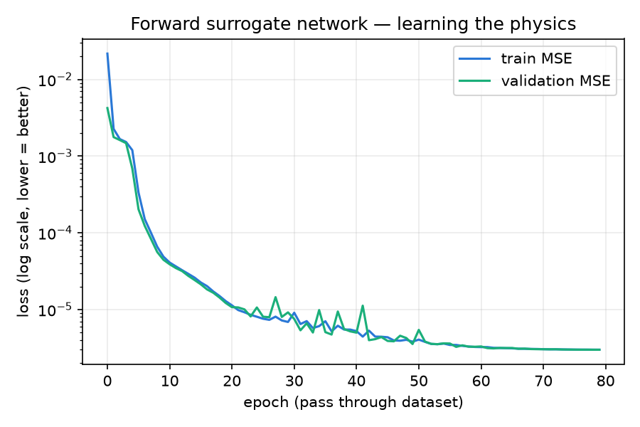
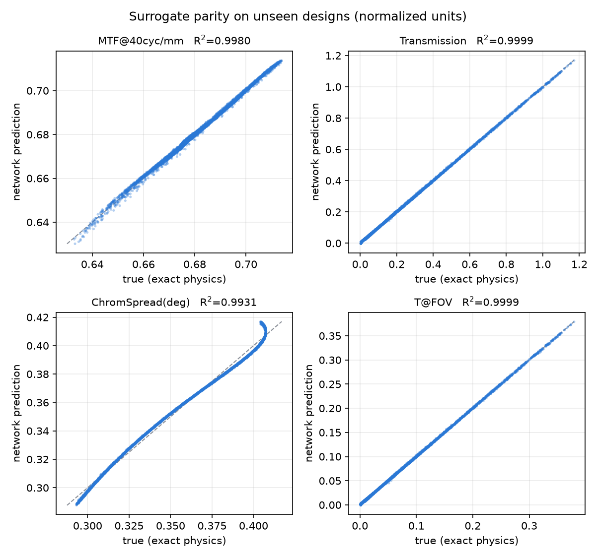
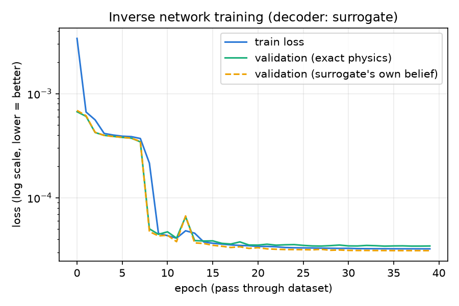
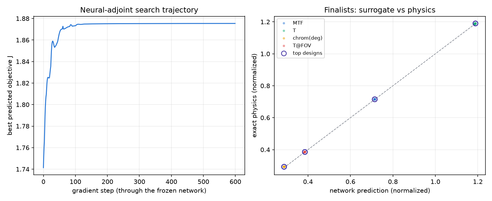

Generated 2026-07-13 00:58. Re-run python3 make_report.py
after any experiment to refresh.
| seed | pmma | samples | epochs | batch | lr | iterations | best_val_MSE | R2_MTF@40cyc/mm | R2_Transmission | R2_ChromSpread(deg) | R2_T@FOV |
|---|---|---|---|---|---|---|---|---|---|---|---|
| 0 | 1 | 50000 | 80 | 512 | 0.001 | 7840 | 0.000003 | 0.99796 | 0.99989 | 0.99307 | 0.99990 |
| seed | decoder | samples | epochs | batch | lr | iterations | best_val_specMSE |
|---|---|---|---|---|---|---|---|
| 0 | surrogate | 30000 | 40 | 512 | 0.001 | 2360 | 0.000034 |
| rank | J_physics | J_surrogate | MTF | T | chrom_deg | T_fov | n | alpha(1/mm) | sigma(nm) | Lc(nm) | t(mm) | period(nm) | depth(nm) | duty | tir_guided_green |
|---|---|---|---|---|---|---|---|---|---|---|---|---|---|---|---|
| 1 | 1.8746 | 1.8754 | 0.71519 | 0.119 | 8.779 | 0.03856 | 1.5 | 7.1411e-05 | 0.75066 | 2.4848e+05 | 1.5013 | 699.94 | 399.99 | 0.5 | 0 |
| 2 | 1.8745 | 1.8753 | 0.71519 | 0.119 | 8.7796 | 0.038558 | 1.5 | 7.1452e-05 | 0.7507 | 2.485e+05 | 1.5008 | 699.88 | 400 | 0.5 | 0 |
| 3 | 1.8743 | 1.8751 | 0.71519 | 0.11899 | 8.7856 | 0.038555 | 1.5 | 7.1417e-05 | 0.75103 | 2.4852e+05 | 1.5008 | 699.22 | 399.97 | 0.5 | 0 |
| 4 | 1.8743 | 1.8750 | 0.71519 | 0.11899 | 8.7883 | 0.038555 | 1.5 | 7.1428e-05 | 0.75116 | 2.4853e+05 | 1.5006 | 698.93 | 399.97 | 0.5 | 0 |
| 5 | 1.8743 | 1.8751 | 0.71519 | 0.11897 | 8.7793 | 0.038551 | 1.4999 | 7.1498e-05 | 0.7507 | 2.4851e+05 | 1.5003 | 699.93 | 399.98 | 0.5 | 0 |
optimal_designs.csv not found — run the matching script first.
| date | J | MTF | T | chrom_deg | T_fov | n | alpha(1/mm) | sigma(nm) | Lc(nm) | t(mm) | period(nm) | depth(nm) | duty |
|---|---|---|---|---|---|---|---|---|---|---|---|---|---|
| 2026-07-13 | 1.87459636 | 0.71519 | 0.119 | 8.779 | 0.03856 | 1.5 | 7.1411e-05 | 0.75066 | 2.4848e+05 | 1.5013 | 699.94 | 399.99 | 0.5 |
| w_mtf | w_T | w_ca | MTF | T | chrom_deg | T_fov | n | alpha | sigma | Lc | t | period | depth | duty |
|---|---|---|---|---|---|---|---|---|---|---|---|---|---|---|
| 3.0 | 0.3 | 0.5 | 0.7373284697532654 | 0.3765394687652588 | 8.947731971740723 | 0.12200822681188583 | 1.4999258518218994 | 5.61855522391852e-05 | 0.7033596634864807 | 399623.9375 | 0.3608524799346924 | 681.8309936523438 | 399.8428649902344 | 0.5000213980674744 |
| 2.0 | 0.6 | 0.5 | 0.7373271584510803 | 0.3765103220939636 | 8.947569847106934 | 0.12199877947568893 | 1.49992036819458 | 5.6192624469986185e-05 | 0.7025580406188965 | 399724.5625 | 0.36101531982421875 | 681.8502197265625 | 399.82952880859375 | 0.500016987323761 |
| 1.0 | 1.0 | 0.5 | 0.7373266220092773 | 0.37649956345558167 | 8.947500228881836 | 0.12199530750513077 | 1.4999183416366577 | 5.619568037218414e-05 | 0.70219886302948 | 399770.6875 | 0.361087441444397 | 681.8587646484375 | 399.82452392578125 | 0.500014066696167 |
| 0.6 | 2.0 | 0.5 | 0.7373261451721191 | 0.3764963150024414 | 8.94837760925293 | 0.121994249522686 | 1.49991774559021 | 5.619626972475089e-05 | 0.7020807266235352 | 399786.3125 | 0.3611131012439728 | 681.7662963867188 | 399.8230285644531 | 0.500012993812561 |
| 0.3 | 3.0 | 0.5 | 0.7373257875442505 | 0.3764953017234802 | 8.949359893798828 | 0.12199393659830093 | 1.4999175071716309 | 5.619616058538668e-05 | 0.7020459175109863 | 399790.875 | 0.3611226975917816 | 681.662353515625 | 399.82257080078125 | 0.5000126957893372 |
| 1.0 | 1.0 | 2.0 | 0.737341046333313 | 0.3758073151111603 | 8.789920806884766 | 0.12177107483148575 | 1.4992867708206177 | 6.124646461103112e-05 | 0.7067215442657471 | 398326.0625 | 0.3036857545375824 | 699.078857421875 | 399.89324951171875 | 0.5000600814819336 |
| depth_nm | scalar_eta1 | rcwa_TE | rcwa_TM | rcwa_unpol |
|---|---|---|---|---|
| 100 | 0.03299697031818189 | 0.10214760202133792 | 0.006019381078268699 | 0.05408349154980331 |
| 200 | 0.12124185550557484 | 0.265620011333515 | 0.026470334084962806 | 0.1460451727092389 |
| 300 | 0.23599620470141472 | 0.3290466710498798 | 0.1198468160421544 | 0.2244467435460171 |
| 400 | 0.3398883082772014 | 0.3010971103761334 | 0.13967865729410775 | 0.2203878838351206 |




pareto_front.png not found.
waveguide_3d.html — interactive 3D waveguide (rotate/zoom, live sliders); waveguide_model.stl opens in any 3D viewer. Regenerate with python3 make_3d_model.py.